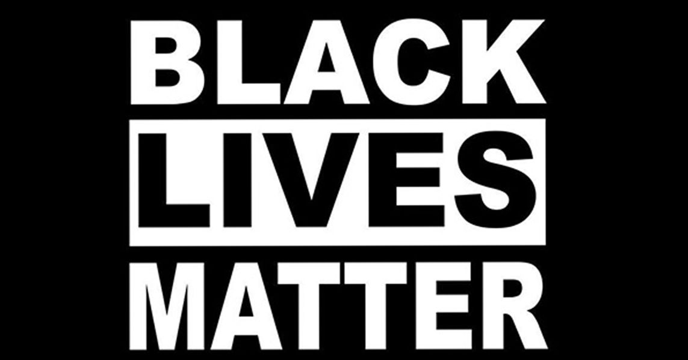

Timeline photos
Akron Ohio is a racist city. It always has been and I see no indication based on the leadership of today that it ever will not be a racist city.
I could give you countless reasons to support this statement. But I'll just give you the most recent one:
Imokhai Okola is a Jones Day attorney. His practice focuses on complex civil litigation and product liability defense.
He is applying to be on the city’s new police oversight board. The white male powermongers of city leadership are doing everything in their power to defile his name and get him off of the list of this police oversight board. I mean LITERALLY it is old white men trying to get him thrown off.
Imokhai is a young Black man. He graduated from University of Akron School of Law. Hi lives in Akron. He grew up in Akron. He went to Firestone High School.
Imokhai is the young Black man success story we all want. And yet old White men are trying to do everything in their power to take away his strength.
LET ME ASK YOU THIS: if Imokhai Okola isn't good enough to be on the police oversight board: WHAT FUCKING YOUNG BLACK MAN IS?
We must change the old men's club that has ruled Akron for decades. I know I look like them. But Jesus fucking Christ I am so sick and tired of my kind. White men have driven colonization, slavery, oppression, murder / torture and rape of indigenous people. We have so many sins to own up to.
I have fought these oppressors for years to try to do ANYTHING for our local homeless population. They haven't done one damn thing.
Please let me take this fight to city hall. PLEASE VOTE FOR ME, SAGE LEWIS, AS THE NEXT WARD 8 AKRON CITY COUNCIL MEMBER.
THE ELECTION IS MAY 2, 2023. PUT IT ON YOUR CALENDAR AND VOTE. THE VERY HEART AND SOUL OF OUR CITY DEPENDS ON IT.
I will fight for the people with everything I have.
#sageforakron8